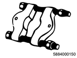

Front differential assembly disassembly (All models)
1. Front differential cage removal
1. Remove the bearing cap from the differential carrier.
Note
- Place alignment marks to the bearing cap and the differential carrier.
Note
- Remove the bearing cap.
2. Remove the differential cage from the differential carrier.
2. Side bearing removal
1. Remove the side bearing from the differential cage.
Note
- Remove the side bearing outer race.
Caution
- When removing the bearings do not mix up the left and right installation positions and the combinations with the bearing races.
Note
- Remove the side bearing inner race using a special tool.

SST: 5-8840-0013-0 - bearing puller

SST: 9-8521-1743-0 - adapter
- Bearing puller
- Adapter
3. Shim removal
1. Remove the shim from the differential cage.
Note
- Organize removed shims according to the installation position and thickness.
4. Flange removal
1. Remove the flange from the drive pinion.
Note
- Fully raise the crimped section of the flange nut, and remove the flange nut using a flange holder.

SST: 5-8840-0133-0（J-8614-11） - flange holder
- Flange holder
Note
- Remove the flange.
5. Drive pinion gear removal
1. Remove the drive pinion gear from the differential carrier using special tool.
Note
- Remove the drive pinion gear using a spindle and hammer.

SST: 9-8521-5032-0 - spindle
- Spindle
2. Remove the collapsible spacer from the drive pinion.
6. Inner bearing removal
1. Remove the inner bearing from the drive pinion gear using special tool.
Note
- Remove the inner bearing from the drive pinion gear using a bearing remover and press.

SST: 5-8840-0015-0 - bearing installer & remover
- Bearing remover
2. Remove the shim from the drive pinion gear.
3. Remove the oil seal from the differential carrier.
4. Remove the bearing outer race from the differential carrier.
Note
- Remove the inner bearing outer race using a brass rod and hammer.
7. Outer bearing removal
1. Remove the outer bearing from the differential carrier.
Note
- Remove the outer bearing from the differential carrier.
- Remove the outer bearing outer race using a brass rod and hammer.